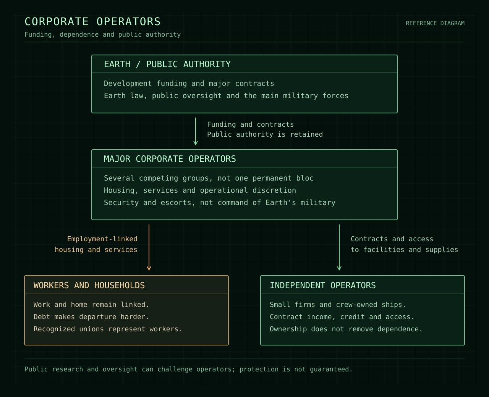

Lore / Law and power
Law and power
Earth law and basic human rights remain the expected standard at Saturn. Companies have substantial practical power, but do not openly replace government. Employment, residency, private security, and public authority remain distinct, even where corporate influence weakens their boundaries.
Rights and company control
Companies use safety requirements, operational necessity, and emergency exceptions to override protections in practice.
The hazards are real, but their use as justification is selective. Conditions accepted for production can become grounds to restrict workers' choices. Each new expansion provides another reason why supposedly temporary restrictions cannot yet end.
Housing and essential services commonly depend on approved employment. Losing a job can therefore threaten a household's place in a settlement, not merely its income. Debt and the cost of departure can make leaving harder. Employment-dependent residency is the main mechanism of control; debt reinforces it. Conditions and residency policies differ between employers.
Lawful independent residency is possible without a major employer's approval. Another employer can sponsor an individual, but competing companies cannot sustainably absorb every resident displaced by the loss of a station operator. Independence is a real possibility, not an easy escape available to everyone.
Public oversight exists, but government corruption, political pressure, and deference to operators can weaken it. Rights on paper do not guarantee effective protection. Unions, public law, and helpful officials still matter. Decent companies and managers exist; the system does not require everyone to be corrupt.
Competing companies
Several major corporate groups operate at Saturn. No single company controls the entire development project. No industry is assumed to belong exclusively to one company.
They compete for contracts and influence while sharing an interest in preserving employer control. Cooperation is not assumed to be universal or permanent. Rivalry can create opportunities without making a competing company benevolent.
State authority and security
Earth controls the main military forces. Companies maintain security and escort forces, not independent sovereign war fleets. Major military intervention requires a state decision rather than an executive's order.
Private security can still be dangerous locally. The boundary concerns its scale and authority, not an inability to harm people. Corporate influence can secure state support, but it is not automatic command of Earth's military.
Ordinary civilian and industrial ships are unarmed. A workship is not assumed to carry weapons simply because it operates on the frontier.
Fleet sizes, specific weapons permissions, command arrangements, and intervention procedures remain open.
Worker representation
Recognized unions and workplace representatives already operate at Saturn. Existing workforces brought relationships and experience from Earth, including experience of bargaining and collective action.
Their existence is normal; their ability to enforce protections is contested. Recognition does not guarantee that representatives can stop production or protect someone from losing an assignment. Individual representatives' loyalties and effectiveness are not predetermined.
Employment representation is distinct from representation as a resident. The institutions through which residents might govern their communities remain undefined.
Institutions and political power
{kind=link}

Details still open
Names of additional companies, public bodies, and unions remain open, along with precise holdings, concessions, alliances, and jurisdictions. Detailed labor and residency rules, specific security powers, and resident government have not yet been established.